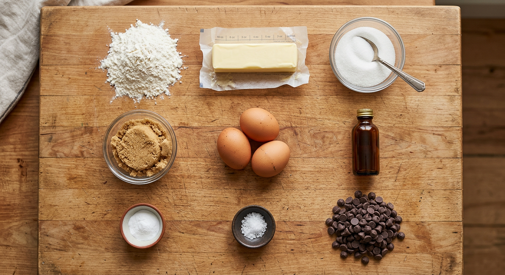
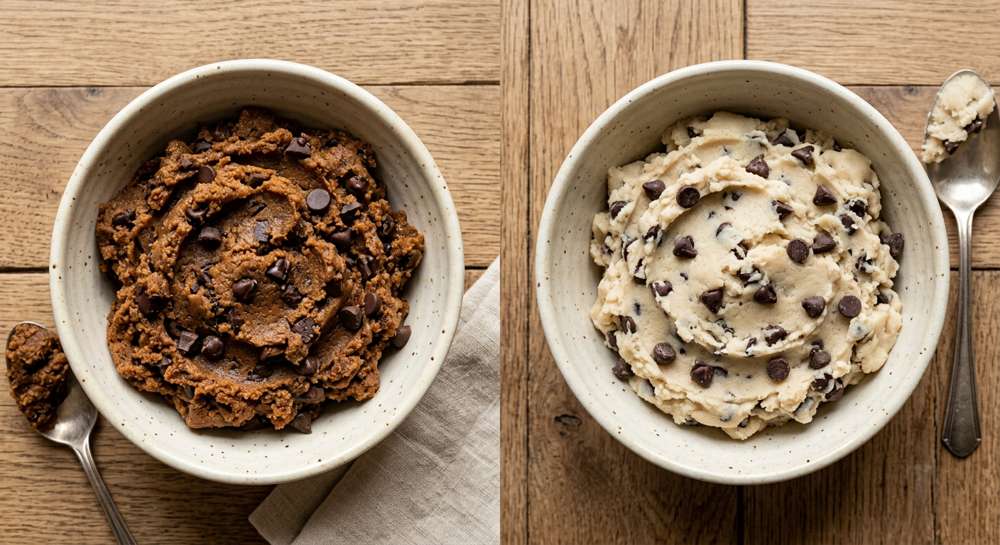
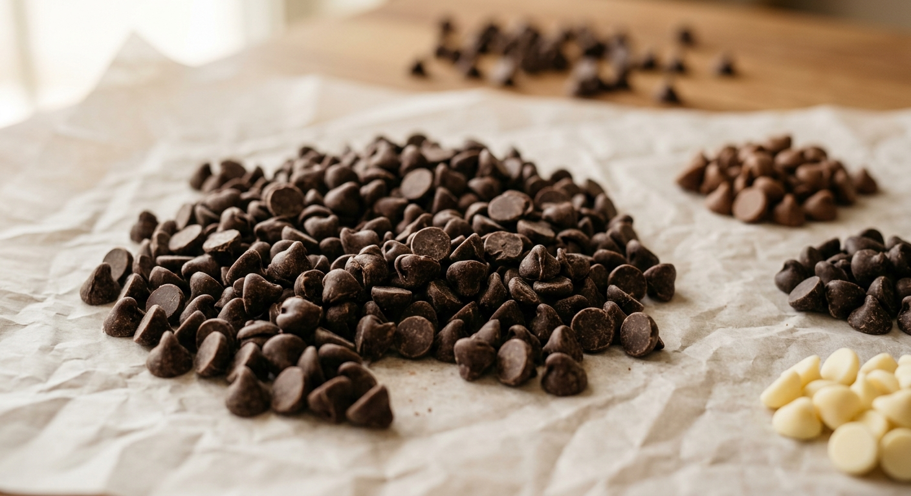
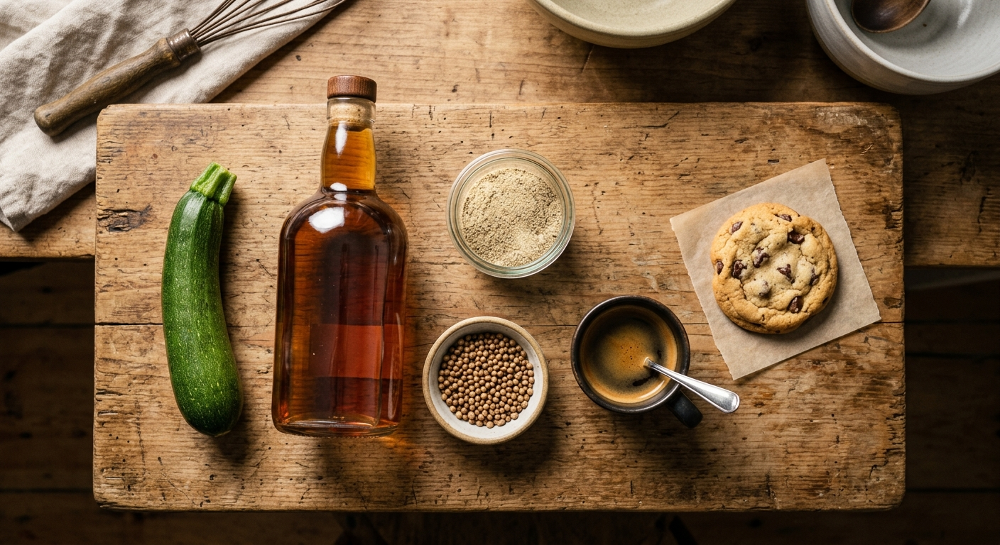
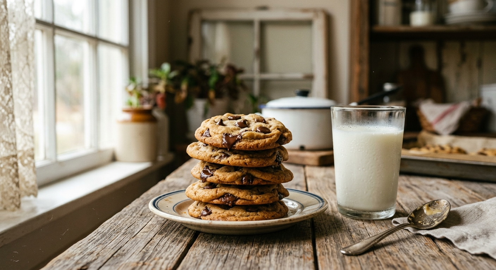

The Most Average Chocolate Chip Cookie
209 home bakers, eighty years of drift, and a recipe that turns out to be remarkably easy to agree on.
Pull 209 chocolate-chip cookie recipes off the internet and the first thing you notice is how little they disagree about. Only eight ingredients appear in more than three-quarters of them, and they are the same eight ingredients every time: egg (97.6%), vanilla (93.8%), all-purpose flour (92.3%), baking soda (89.5%), white sugar (83.3%), light brown sugar (81.3%), salt (79.9%), and butter (76.1%). Semisweet chocolate chips sit just below the line at 74.6%.
Every modern chocolate-chip cookie is a descendant of a single 1938 recipe. Ruth Wakefield invented it at the Toll House Inn in Whitman, Massachusetts, sold the rights to Nestle in 1939 for a dollar and a lifetime supply of chocolate, and the recipe has been printed on the back of every bag of Toll House morsels ever since. What 209 strangers on AllRecipes and Epicurious have produced is not 209 cookies — it is 209 variations on the same great-grandmother.
If you take the median amount of each canonical ingredient, the modal oven temperature, and the modal bake time, the empirical "most average chocolate chip cookie" falls out of the dataset as a concrete, bake-able recipe: 3 1/3 cups flour, 1 1/4 cups butter, 1 cup white sugar, 1 1/4 cups brown sugar, 3 eggs, 1 1/3 tsp baking soda, 1 tsp salt, 2 tsp vanilla, 2 cups semisweet chocolate chips. 350°F. 10 minutes. This is what the internet has agreed on.
The Most Average Chocolate Chip Cookie
- 3 1/3 cups all-purpose flour
- 1 1/4 cups butter
- 1 cup white sugar
- 1 1/4 cups light brown sugar
- 3 eggs
- 1 1/3 tsp baking soda
- 1 tsp salt
- 2 tsp vanilla
- 2 cups semisweet chocolate chips

A cliff at 75%
The frequency distribution has a cliff. Eight ingredients show up in at least 75% of recipes. Zero ingredients live in the 25%-to-74% band. The ninth most common item, baking powder, is already down at 23.9%, and 49 of the 68 ingredients in the entire vocabulary (72%) appear in fewer than 5% of recipes.
You can almost draw the cookie as a barbell: a dense, narrow core of eight must-haves on one end, a sprawling confetti of 49 rarities on the other, and almost nothing in between. This isn't the shape of a smooth spectrum of taste. It's the shape of an orthodoxy with a long, wild margin.
Trying to bake a true average recipe — one that includes every ingredient in proportion to how often it appears — breaks in exactly this way. The Pudding's 2018 essay produced a mathematical mean recipe that included sixty ingredients in trace amounts: 0.002 cups applesauce, 2.855 eggs. It tasted flat. The math is technically correct and the result is inedible. A better mental model is: "the average cookie is the core, the variation is the margin."
The 0.40 rule
Across 149 recipes that include both butter and flour, the median butter-to-flour ratio is exactly 0.40 — forty cups of flour for every twenty cups of butter. Two-thirds of all recipes sit between 0.25 and 0.50. Wakefield's 1938 original was 0.44. Eighty years later, bakers have barely moved the dial.
This is the load-bearing wall of the cookie. Bakers will happily fight about brown sugar versus white, semisweet versus milk, walnut versus pecan versus no nut — but they quietly agree on the butter-to-flour balance, because that ratio is what determines whether your cookie holds together or puddles into a sad buttery lake. The texture literature confirms the physics: too little butter and you get doughy; too much and you get spread.
Half white, half brown
80% of recipes use both white granulated sugar AND brown sugar. Only 9% go brown-only, only 3% go white-only. Among the 168 recipes that use both, the median BROWN SHARE is exactly half — the 50/50 split is the single most common outcome, and 83 of 168 recipes (49%) fall in the narrow 40-to-50% brown band.
This is not a taste preference — it is a chemistry pair. Brown sugar carries molasses, which is hygroscopic and acidic; it pulls moisture into the cookie and keeps it chewy. White sugar crystallizes as cookies cool and produces crisp. A recipe with both is using brown for chew and white for crunch, in roughly equal measure. Bakers who skew above 75% brown (only 3% of recipes) are declaring allegiance to the all-chewy camp; bakers who skew toward white are asking for a crisp, thin cookie.

Soda, not powder
Nearly nine out of ten recipes (89.5%) use baking soda — either alone (68.9%) or with baking powder (20.6%). Only 3.3% of recipes use baking powder alone, and 7.2% use neither.
The lopsidedness is not an accident. Baking soda is alkaline; it drives the Maillard browning that gives a chocolate-chip cookie its toasted caramel color and its characteristic slightly-dense chew. Baking powder is acidic; it makes cookies paler and more cake-like. Choosing soda over powder is choosing "cookie" over "mini muffin," and the internet has emphatically chosen cookie.
Semisweet wins
Of the 196 recipes that use any chocolate chip, 68.9% use semisweet chips ONLY. Milk chocolate shows up in just 14.8% of recipes, bittersweet in 8.1%, dark and white in 4.3% each. Only 10.6% of recipes (22) blend two or more chip types together.
Food writers and pastry chefs have been evangelizing chip blends for two decades — a layer of bittersweet for depth, a handful of milk chocolate chunks for sweetness, a few disks of 70% dark for drama. The home-baker consensus has politely ignored them. When Ruth Wakefield broke up that Nestle semi-sweet bar with an icepick in 1938, she set the chocolate to semisweet, and 89% of recipes on the internet still agree with her.

Zucchini, bourbon, white pepper
Where the disagreement actually lives: 28 ingredients appear in exactly one recipe each. This is the long margin of personal taste. Someone, somewhere, puts zucchini in their chocolate chip cookie. Someone else puts bourbon. Someone puts white pepper; someone puts coriander; someone puts espresso; someone puts xanthan gum. Another 21 ingredients show up in 2 to 5 recipes — honey, toffee, coconut, corn syrup, peanut butter, maple syrup.
The variation that feels the most "folk-recipe" is the fat variation: 23.9% of recipes — nearly a quarter — use no butter at all. Shortening is in 13.9%, margarine in 5.3%. Only 5.3% of recipes do the famous butter-plus-shortening combo that mid-century baking manuals love. This is where personal lineage shows up most clearly — grandma's recipe versus food-magazine's recipe.
Pastry writers have insisted for decades that "there is no best chocolate chip cookie." Kenji Lopez-Alt argued it directly in his Food Lab essay; the New York Times endorsed a radical 36-hour-rest bread-flour cookie from Jacques Torres. The dataset's long tail is the statistical trace of that argument — every baker quietly voting for their own corner of the manifold.

80 years later
Eighty years of home drift HAS moved the recipe — just not where you'd expect. The modern median recipe uses 85% more flour than Wakefield's 1938 original, 104% more brown sugar, 67% more white sugar, and a remarkable 150% more vanilla. Wakefield called for three-quarters of a teaspoon of vanilla in a 48-cookie batch; the internet has decided on two whole teaspoons.
Crucially, the chocolate chip ratio has barely moved. Wakefield said 1.6 cups of chips per 48 cookies; the modern median says 2.0 cups. A +25% drift, smaller than almost every other ingredient. The consensus around chocolate has been the most conservative. The consensus around vanilla has been the most generous — modern home baking's 150% vanilla-inflation is the loudest signal of how the recipe has changed.
The direction of drift is revealing. Bakers have added more of everything that tastes like butter and caramel (brown sugar, vanilla, flour) and held steady on the star ingredient (chocolate). They've pushed the recipe from Wakefield's thin, crunchy 1938 cookie toward a bigger, softer, sweeter 2018 cookie — still recognizably the same thing, but fuller on every axis.
350°F, 10 minutes, mix
The directions corpus — 31,667 words of recipe instructions — is dominated by a tiny verb vocabulary. Mix, cool, beat, bake, stir. Preheat. Cream. Combine. Eight verbs, 2,000+ occurrences combined. Sifting shows up in only 15% of recipes; chilling the dough in only 11%. The average home-baker recipe is a quick, unsifted, unchilled process.
The oven canon is 350°F (57% of mentions) and 375°F (36%). The bake canon is 10 minutes (median) — 67% of all bake-time mentions fall in the 8-to-12 minute window. No recipe in the dataset goes above 400°F. The time and temperature are as consensus-locked as the ingredients.
Professional baking writers love to argue for longer resting, colder dough, higher-protein flour, and gentler ovens. The internet has said: no, we'll cream the butter, beat in the sugar, stir in the flour, drop by the spoonful, 350°F, ten minutes, done. The average cookie is also the average technique.
The best recipes are the orthodox ones
Only 47% of the recipes in the dataset carry a user rating, but among those that do the internet is remarkably kind — the mean rating is 0.81 on a 0-to-1 scale, and the median is 0.87. Three recipes have a perfect 1.0.
Here is the payoff: the ten highest-rated recipes are remarkably orthodox. All ten include flour, baking soda, brown sugar, and egg. Nine of ten include butter, vanilla, white sugar, and chocolate chips. Eight of ten include salt. The only "weird extras" that show up more than once are pudding mix (2 recipes) and milk (2 recipes). The worst-rated recipe in the whole dataset is E_88 — the same mega-batch outlier with 16 cups of flour, which is almost certainly mis-scaled and tastes about as good as that sounds.
Complexity barely helps: rating correlates with ingredient count at only r = 0.148. The sweet spot is 10-to-11 ingredients — two or three additions beyond the canonical eight. A monk-minimal 7-ingredient recipe underperforms. A 12-plus-ingredient recipe plateaus. The optimum is "canon plus a small flourish."
Which is the quiet answer to the whole question. A "most average cookie" is not a compromise between 209 different visions — it is a reconstruction of what 209 bakers all basically agreed on, with the variation living at the edges. And the recipes that rate the highest are the ones closest to that agreement, not the ones furthest from it. Orthodoxy, it turns out, is popular for a reason.
Bake this
Here is the most average chocolate chip cookie, one more time, for the reader to take to their own kitchen: 3 1/3 cups all-purpose flour, 1 1/4 cups butter, 1 cup white sugar, 1 1/4 cups light brown sugar, 3 eggs, 1 1/3 tsp baking soda, 1 tsp salt, 2 tsp vanilla, 2 cups semisweet chocolate chips. Cream the butter and sugars. Beat in the eggs and vanilla. Stir in the flour, soda, and salt. Fold in the chips. Drop by the spoonful. 350°F. 10 minutes.
The Pudding's 2018 experiment — baking three different "average" cookies, the arithmetic mean with its sixty trace ingredients, the 4-gram predictive text version, and the letter-by-letter neural net — concluded that averaging is a terrible way to make a cookie. This blog ends on a different note: averaging ingredients is terrible, but averaging CONSENSUS is not. Strip the long tail away, keep the median of the canon, and what you get is the cookie itself. It's not the most interesting cookie on the internet. It is, by construction, the one 209 strangers would agree on.
Which might also be the point of a folk recipe: not to be the best, but to be the one everyone already knows.

Bake This
- 3 1/3 cups all-purpose flour
- 1 1/4 cups butter
- 1 cup white sugar
- 1 1/4 cups light brown sugar
- 3 eggs
- 1 1/3 tsp baking soda
- 1 tsp salt
- 2 tsp vanilla
- 2 cups semisweet chocolate chips
- Cream butter + sugars.
- Beat in eggs + vanilla.
- Stir in flour, soda, salt.
- Fold in chocolate chips.
- Drop by spoonful on a baking sheet.
- Bake 350°F, 10 minutes.
References & Data
- Dataset: The Pudding — cookies dataset, released with "Baking the Most Average Chocolate Chip Cookie" by Elle O'Brien & Amber Thomas, May 2018. 209 recipes normalized to 48-cookie yield (analysis uses the distinct Recipe_Index values; the accompanying essay reports 221).
- Origin of the recipe: Ruth Graves Wakefield, Toll House Tried and True Recipes (1938); see Ruth Graves Wakefield (Wikipedia) and Nestle's Toll House history.
- Benchmark recipe (Wakefield 1938 scaled): Original Nestle Toll House Chocolate Chip Cookies.
- Baking science: Scientifically Sweet; Chocolate chip cookie (Wikipedia); Kenji Lopez-Alt, Serious Eats; Jacques Torres' chocolate chip cookies, NYT Cooking.
- Quantity-variance methodology: KitchenScale: Learning to predict ingredient quantities from recipe contexts.
- Charts: Vega-Lite 5. Images: Google Gemini 3.1 Flash Image Preview (via OpenRouter). Reference photos: Wikimedia Commons (CC BY-SA).